A six-month sprint through the Startup Deep Tech Ventures Lab. More show than tell, scroll to live it.
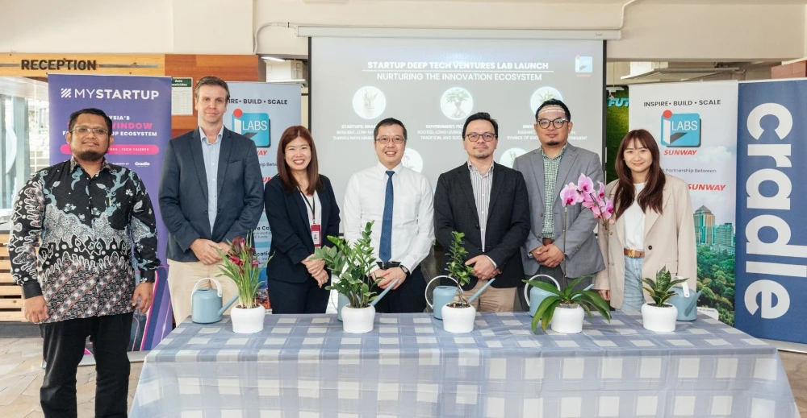
The launch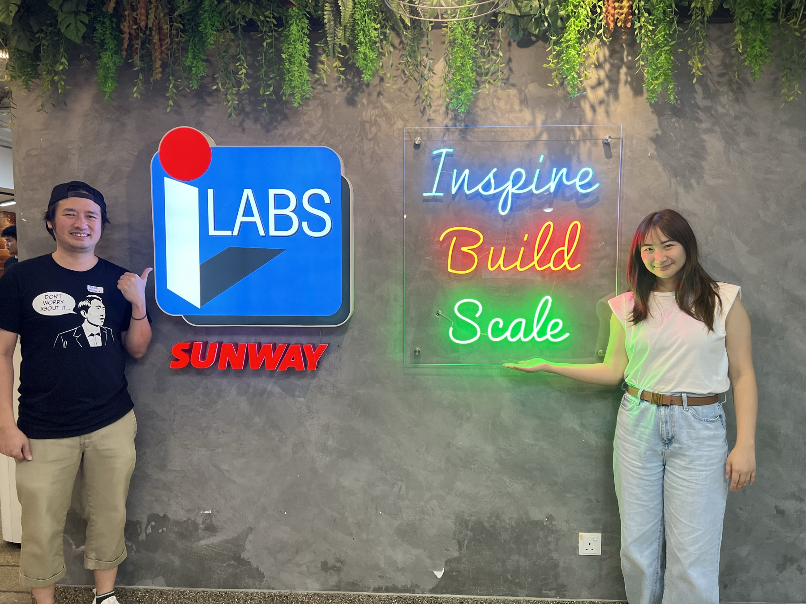
Sunway iLabsWe walked into Sunway iLabs knowing the order mattered. One of 20 startups, picked from 69.
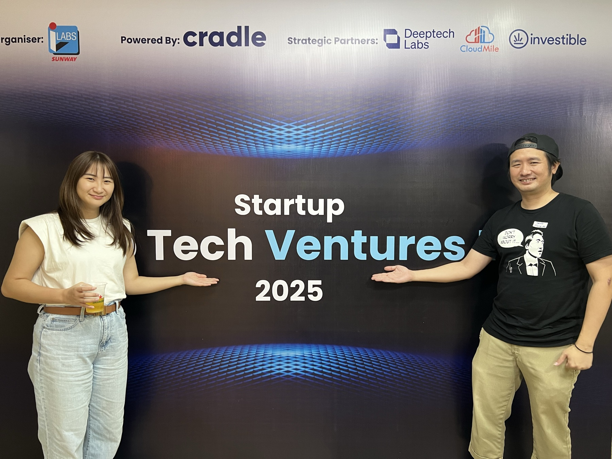
The partnersStrategic partners from Cambridge to Singapore: Deep Tech Labs, CloudMile, and Investible.
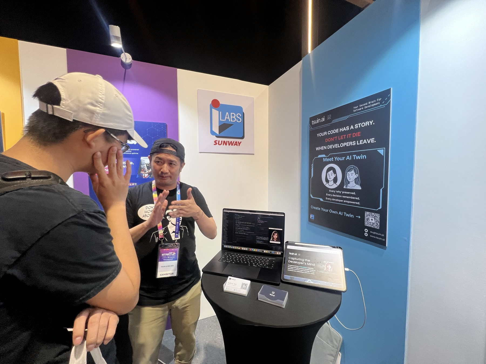
Six months of workExpert-led, every week. We rebuilt how we explain what we are building.
Monthly office hours with people who had already done the hard parts.
Sessions that turned a demo into a story investors could follow.
Seven verticals, from AI to energy transition, pushing each other forward.
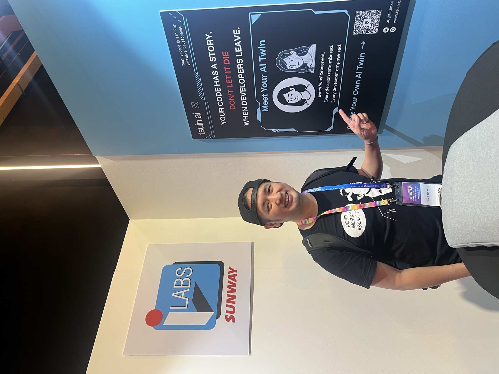
The message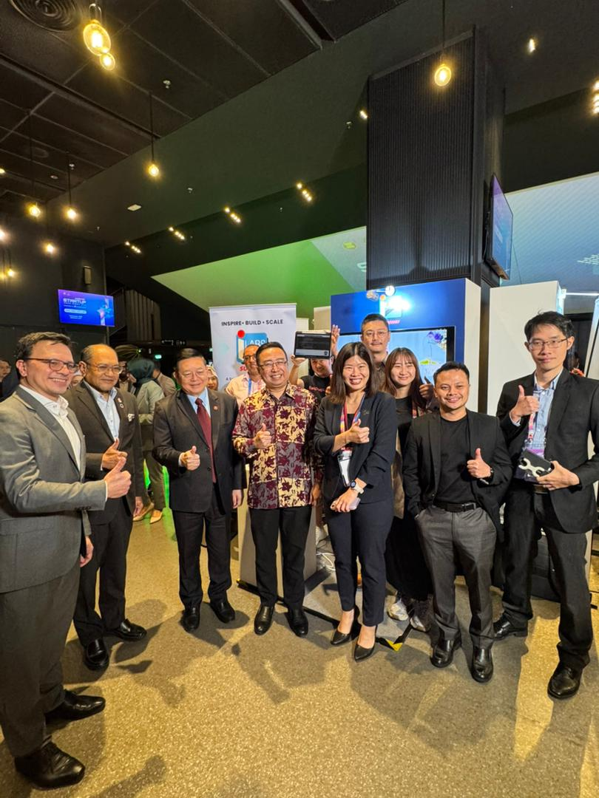
VIP walkaboutFounders, investors, and a steady stream of VIPs. This is why you show up in person.
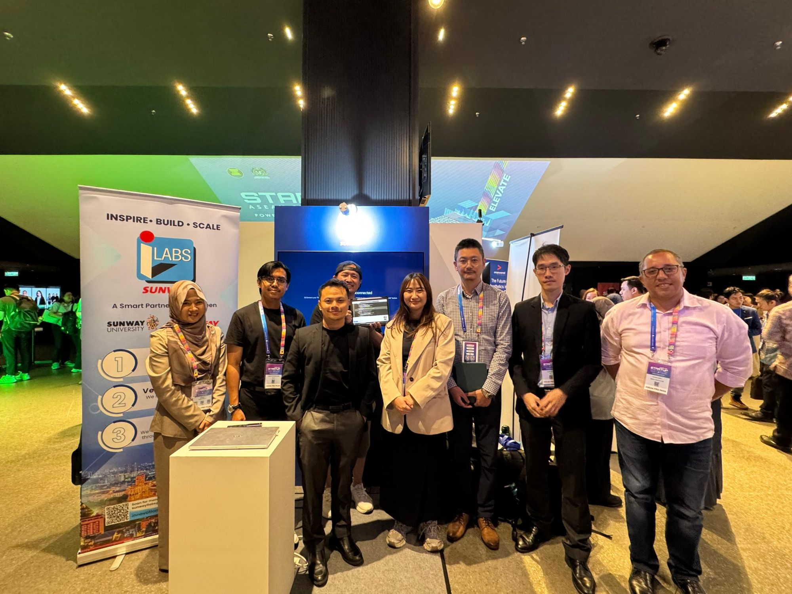
At the booth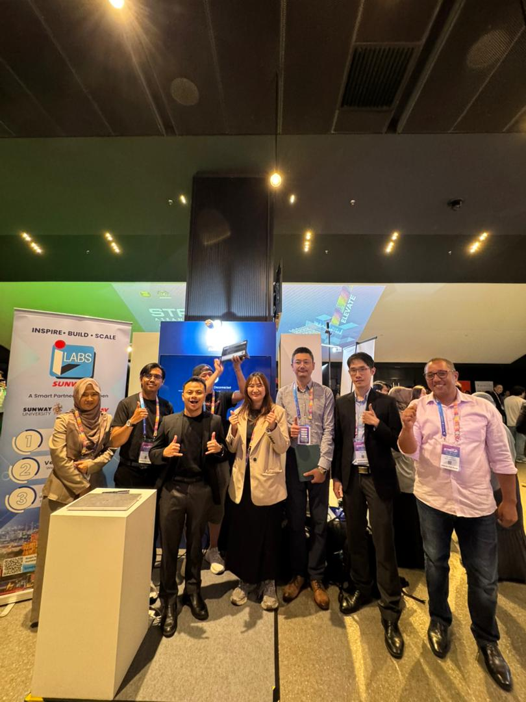
Thumbs up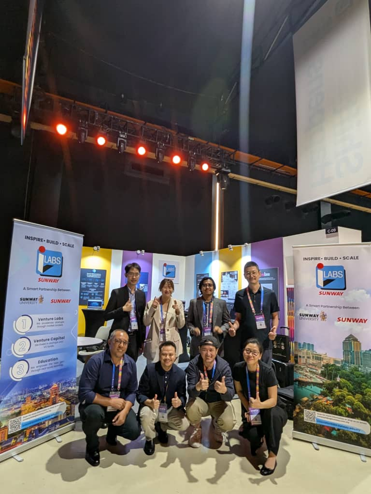
The cohort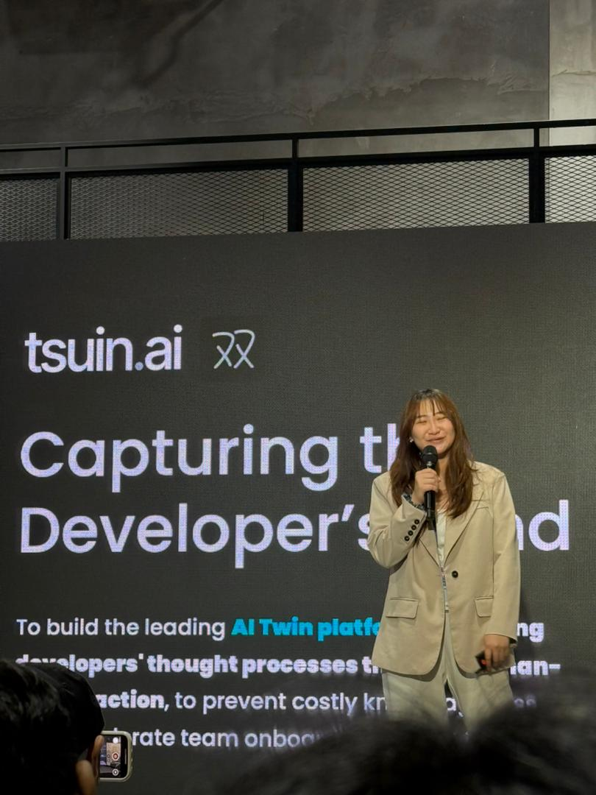
On the mic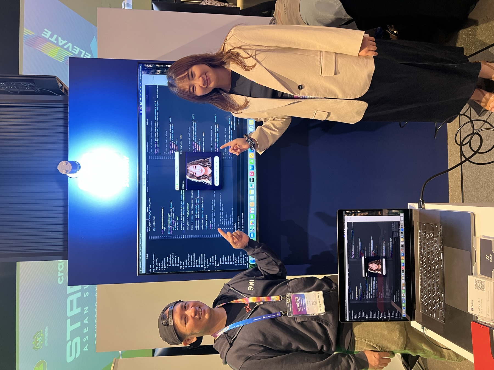
Live demoThe AI Twin on the big screen, capturing a developer’s thinking in real time.
Every decision remembered, so the knowledge stays when people move on.
That is where you learn what actually resonates.
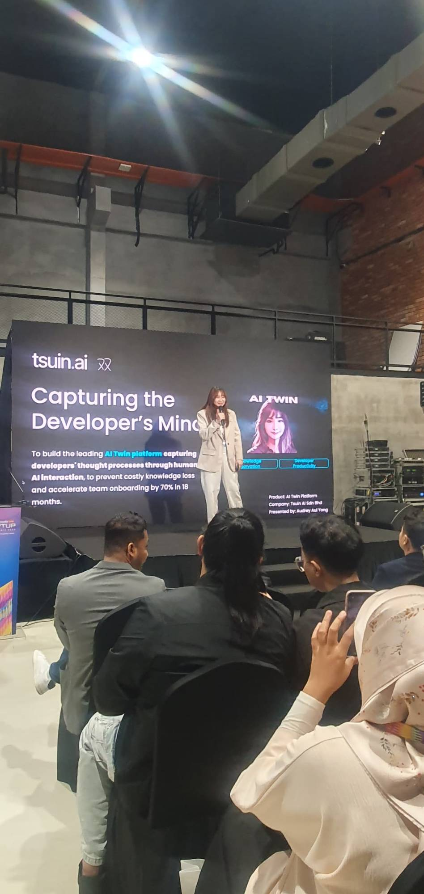
Capturing the Developer’s Mind“Moving forward, our startup’s journey is very exciting, because through the Deep Tech Ventures Lab we are progressing really fast.”